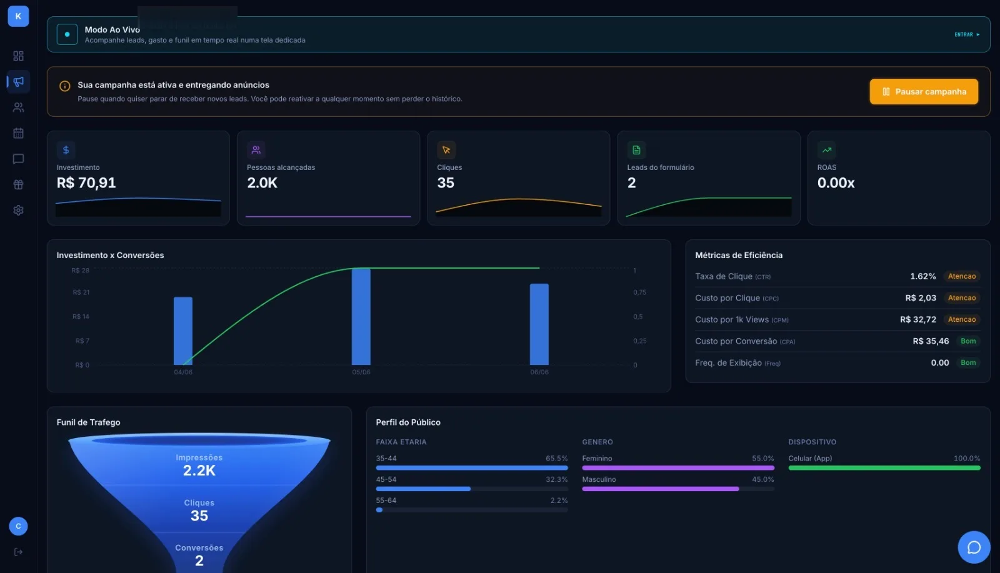

Kaptfy
Plataforma SaaS que cria, publica e otimiza campanhas de Meta Ads para o mercado imobiliário. O corretor cadastra o imóvel; o anúncio vai ao ar e o lead chega no WhatsApp dele.
kaptfy.com.br →A Melo cria produtos próprios — como a Kaptfy — e desenvolve sistemas sob medida com inteligência artificial, mobile, web e blockchain.
Nossa plataforma de Meta Ads para o mercado imobiliário cria, publica e otimiza campanhas sozinha — o corretor recebe o lead no WhatsApp. É a prova do que entregamos: produto em produção, não protótipo.
O motor ajusta público e criativo duas vezes por dia, sem intervenção do corretor.
Do anúncio no Instagram pra conversa real, com aviso na hora.

Cinco frentes, um padrão: entregar sistema rodando, não apresentação de sistema.
Agentes e automações com modelos de linguagem no fluxo real de trabalho — decidindo, escrevendo e executando com supervisão humana onde importa. É o que roda na Kaptfy todos os dias.
Da arquitetura à publicação nas lojas. Apps que conversam com o seu backend, recebem push e funcionam como o usuário espera — não adaptações de site.
Produto, painel administrativo, API, cobrança recorrente e infraestrutura. O ciclo inteiro de um SaaS — que a gente conhece porque opera o nosso.
Smart contracts escritos pra serem auditados, infraestrutura de chain e integração de pagamentos com cripto — engenharia, não especulação.
Uma segunda opinião de quem constrói. Revisão de arquitetura, performance e segurança com recomendação executável — e a opção de implementar com você.
Produto próprio e sistemas de clientes, em produção.
Plataforma SaaS que cria, publica e otimiza campanhas de Meta Ads para o mercado imobiliário. O corretor cadastra o imóvel; o anúncio vai ao ar e o lead chega no WhatsApp dele.
kaptfy.com.br →Loja virtual e operação digital de uma marca de velas aromáticas artesanais — do catálogo ao tráfego pago.
Gestão e automação de processos para operação de engenharia: orçamento, medição e acompanhamento de obra.
Entendemos o problema antes de escrever código: processo, dados, restrições. Se software não for a resposta, dizemos — sai mais barato ouvir isso agora.
Ciclos curtos com entregas que você usa, não relatórios de progresso. Acesso direto a quem está construindo, sem camada de gerência traduzindo recado.
Sistema no ar é o começo do trabalho, não o fim. Monitoramos, corrigimos e evoluímos — é assim que os nossos próprios produtos rodam.
Escreva com o contexto que tiver — uma ideia, um sistema travado, uma dúvida técnica. Respondemos com um caminho concreto, não com proposta de prateleira.